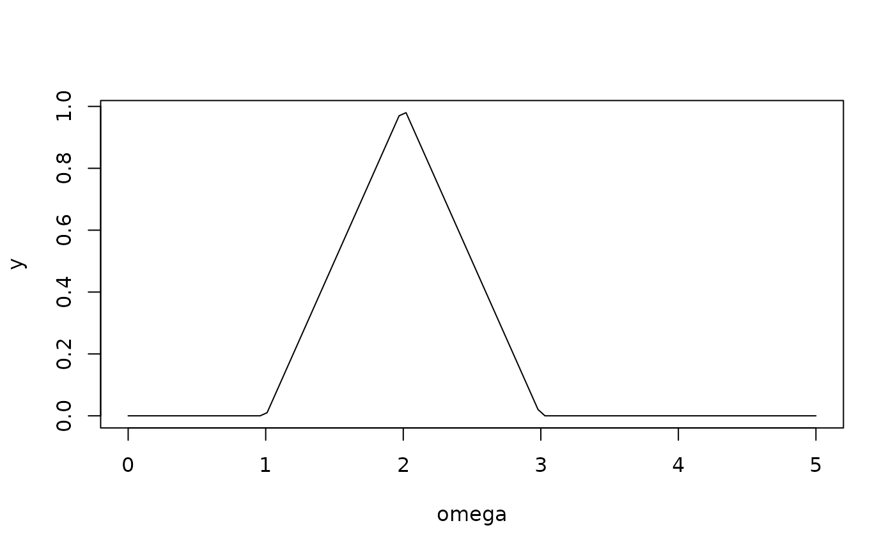

Evaluates the B-spline basis function of degree k, indexed by i,
at a vector of input locations omega, using its truncated power expansion.
The result is scaled so that the basis integrates to 1 over its support.
Usage
evaluate_bspline_basis(omega, knots, i, k)
Arguments
- omega
A numeric vector of input locations at which to evaluate the basis function.
- knots
A numeric vector of knots.
- i
An integer index indicating the position in the knot sequence for which to compute the coefficients.
- k
The degree of the B-spline basis function (must be 0, 1, or 2).
Value
A numeric vector of the same length as omega, giving the evaluated basis function values.
Examples
knots <- c(0, 1, 2, 3, 4, 5)
omega <- seq(0, 5, length.out = 100)
y <- evaluate_bspline_basis(omega, knots, i = 1, k = 1)
plot(omega, y, type = "l")
